Due: Friday, February 17, 2006.
- Let the polyhedron
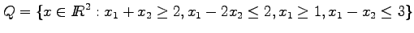.
Graph this polyhedron, and hence find matrices 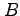 and such that
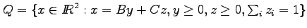.
- Consider the linear programming problem
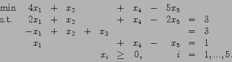
Show that this problem has unbounded objective function value by
using the revised simplex algorithm starting from the basic feasible
solution
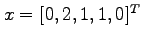. Use the eta factorization of the
inverse, so you should first factorize the initial basis as
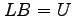, where 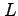 is lower triangular and 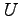 is upper triangular.
On subsequent iterations, update the basis matrix by using eta
matrices. What is the ray that you find?
(Hint: you should find the ray on the second iteration.)
- Use
AMPL
or another linear programming package to solve the linear
programming problem
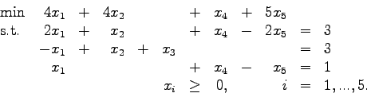
(See the course webpage for more information on
AMPL.)
- Give an example of a linear programming problem that has a degenerate
optimal solution and for which the dual problem has a unique solution.
- Show how the ray you found for the linear programming problem in
question 2 can be used to construct a linear combination of the dual
constraints that is infeasible.
- The
next
sheet is part of a paper which was submitted to
Mathematical Programming. The authors propose an algorithm for linear
programming and then claim the algorithm is polynomial.
Does this claim seem reasonable? Justify your answer.
(Note that the algorithm is stated in terms of an LP of the form
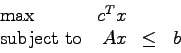
which is the dual problem in our standard dual pair.
The notation 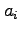 represents the 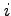th row of .
A restriction on the sign of the variables is included in the matrix.)
John E. Mitchell
2006-02-07